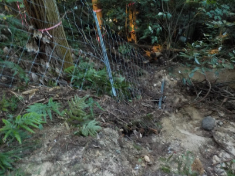
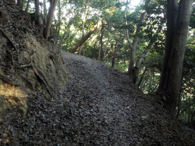
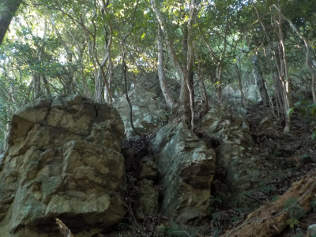
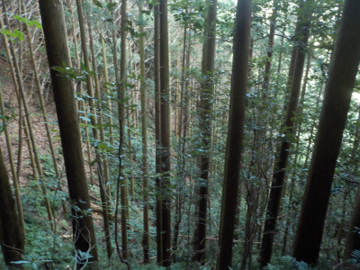
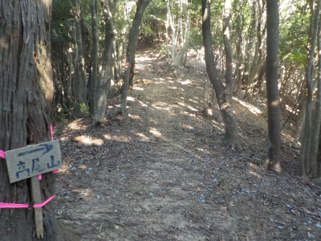
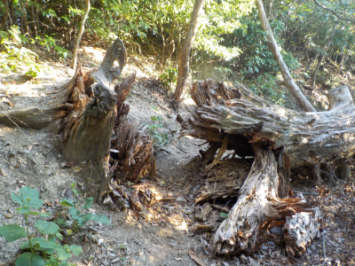
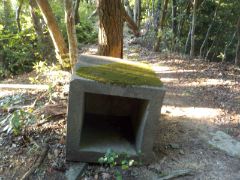
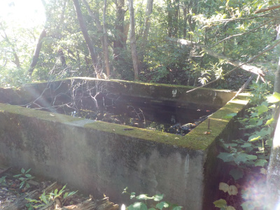
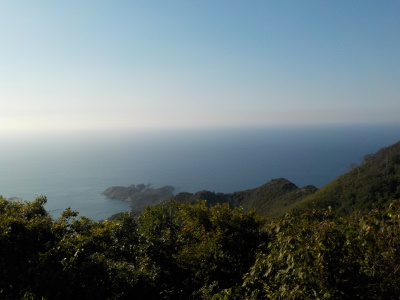
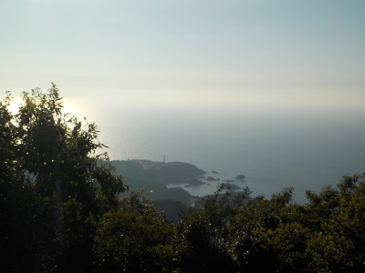

高尾山に初めて登りました。
2021/08/05
山頂の景色がいいって情報があったので、登ってみたかった場所です。

入口付近の鹿柵は土砂崩れで倒れていました。
今年の豪雨でなったんでしょうか。

山道は落ち葉があり、ふかふかしてました。

巨石がありましたが、名前等の表記はありませんでした。
山歩きしてると小さな案内板を見るのが楽しいですが、この山はそうゆうのがあまりありませんでした。

こうゆう場所ってよくありますよね。

ここから風が当るようになりました。尾根かな？
木の高さが低くなり、日差しに当るようになりました。

道を倒木が塞いていました。かなり前に倒れたものっぽいです。
隙間を通れるので問題ないです。
木が太いのでアドベンチャー感があっていいですね。

旧海軍の施設付近にはこの四角いものが数個ありました。何でしょうね？

水が溜まったものです。

山頂の砲台跡からの眺めです。綺麗でした。

日御碕灯台付近の写真ですが、太陽が眩しくて灯台が分かりませんね。
肉眼ではよく見えましが、低価格のデジカメではうまく写せませんでした。
写真を撮りたい人は西日になる前に登った方が良さそうです。
なだらかな道が多く、手を使う必要もほぼなく、歩きやすい道のりでした。
山頂は木が多く、ピンポイントで景色を見ました。葉っぱが落ちる冬はもっと景色がいいかも？
旧海軍の施設を見れたのが一番良かったかな。終戦記念日くらいに登るのがおすすめです。